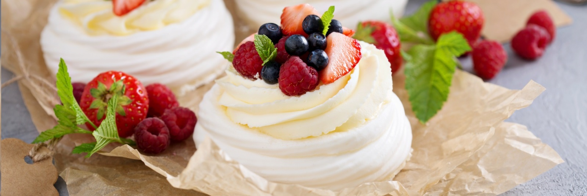

АННА ПАВЛОВА

ИНГРЕДИЕНТЫ
ЭТАПЫ ПРИГОТОВЛЕНИЯ
Меренга:
- Белок- 140 г
- Сахар- 280 г
- Кукурузный крахмал- 6 г
- Лимонный сок- 4 г
- Белок комнатной температуры взбиваем с лимонным соком на небольшой скорости до состояния «пивной пены»;
- После достижения «пивной пены» вводим частями сахар в несколько приёмов;
- Взбивание меренги может занять 15 – 20 минут.
- Сахар должен полностью раствориться, будет глянцевая и блестящая меренга, которая хорошо держит форму.
- В последнюю очередь вводим кукурузный крахмал;
- Отсаживаем с кондитерского мешка фигурной насадкой нужную нам форму на пергамент, и выпекаем при 80 градусах примерно 2 часа. (Обязательно должна остаться белого цвета).
Конфи клубника:
- Клубничное пюре- 150 г
- Сахар- 20 г
- Кукурузный крахмал- 10 г
- Клубничное пюре переложить в сотейник;
- Сахар смешать с крахмалом;
- Клубничное пюре довести до кипения вместе с сахаром и крахмалом, прокипятить 2 минуты;
- Переложить конфи в кондитерский мешок.
Крем - чиз:
- Сливочный сыр- 150 г
- Сахарная пудра- 80 г
- Сливки 30%- 300 г
- Ванильный сахар- 10 г
- Все ингредиенты нужно взбить до пышного крема;
- Перекладываем в кондитерский мешок с фигурной насадкой;
- Когда Павлова подсохнет, кладем во внутрь любимые ягоды, конфи, отсаживаем крем и сверху кладем аккуратно еще свежих ягод.
ИНГРЕДИЕНТЫ:
- Белок- 140 г
- Сахар- 280 г
- Кукурузный крахмал- 6 г
- Лимонный сок- 4 г
ЭТАПЫ ПРИГОТОВЛЕНИЯ:
- Белок комнатной температуры взбиваем с лимонным соком на небольшой скорости до состояния «пивной пены»;
- После достижения «пивной пены» вводим частями сахар в несколько приёмов;
- Взбивание меренги может занять 15 – 20 минут.
- Сахар должен полностью раствориться, будет глянцевая и блестящая меренга, которая хорошо держит форму.
- В последнюю очередь вводим кукурузный крахмал;
- Отсаживаем с кондитерского мешка фигурной насадкой нужную нам форму на пергамент, и выпекаем при 80 градусах примерно 2 часа. (Обязательно должна остаться белого цвета).